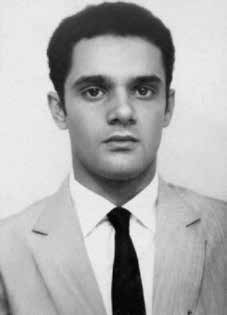

Lincoln
Bicalho
Roque
CIRCUNSTÂNCIAS DA MORTE
Lincoln Bicalho Roque morreu após ter sido preso e torturado por agentes da repressão no Destacamento de Operações de Informações – Centro de Operações de Defesa Interna no Rio de Janeiro (DOI-CODI-RJ). Seu corpo foi localizado em 13 de março de 1973, próximo ao Pavilhão de São Cristóvão, no Rio de Janeiro, com pelo menos quinze ferimentos provocados por projéteis de armas de fogo. Os agentes do Estado divulgaram a morte em tiroteio de Lincoln Bicalho em 21 de março, cerca de dez dias após o suposto confronto. Os médicos Gracho Guimarães Silveira e Jorge Antunes Amorim realizaram a necropsia no Instituto Médico Legal (IML), confirmando a versão dos órgãos de segurança. O corpo de Lincoln Bicalho Roque foi entregue à família e seus restos mortais foram sepultados no Cemitério Jardim da Saudade, no Rio de Janeiro. Conforme laudo de exame cadavérico, a morte de Lincoln Bicalho ocorreu quando ele “reagia às forças de segurança”.i Embora contenha uma série de informações relativas ao estado físico do cadáver, o laudo não apresenta nenhuma indicação sobre a presença de pólvora nas mãos de Lincoln Bicalho, aspecto usualmente investigado em caso de homicídio em confronto com troca de tiros. Além disso, o laudo de exame de local de homicídio afirma que junto com o cadáver, ou nas proximidades do local da morte, “não foram encontrados quaisquer documentos, pertences ou outros elementos materiais (vestígios) de valor criminalístico que se pudesse relacionar ao evento”.ii Também não há registro da arma de fogo que supostamente teria sido usada por Lincoln para reagir às investidas dos agentes do Estado. João Luiz de Santiago Barbosa Quental, companheiro de Lincoln no PCdoB, preso em 6 de março de 1973 e levado para o DOI-CODI/RJ, declarou que, dias depois de sua prisão, foi transportado a São João de Meriti (RJ), local onde teria encontro com Lincoln. Ali testemunhou a prisão de Lincoln que foi imobilizado pelos agentes pelo cós das calças e pelos braços, e “que em nenhum momento esboçou reação a essa prisão”. Ainda afirmou que “na ocasião da prisão de Lincoln não ouviu nenhuma troca de tiros nem movimentação que pudesse sugerir resistência”.iii Depoimento prestado por Delzir Antônio Mathias à CEMDP ratifica a versão apresentada por João Luiz de Santiago, a respeito da prisão de Lincoln Bicalho. Delzir afirmou em seu testemunho que foi preso por agentes do Estado no dia 1º de junho de 1975, e que após sua prisão, foi imediatamente conduzido para um local, que não pôde identificar com certeza, onde as sessões de tortura foram intensas e prolongadas. Segundo seu relato, os torturadores diziam a Delzir que ele era uma pessoa muito corajosa, assim como o Lincoln; “que o Lincoln resistiu muito” e queriam passar o filme para que visse como o Lincoln havia ficado.iv O estado em que ficou o corpo de Lincoln ficou registrado nas fotos de perícias de local, que evidenciam sinais de tortura. Amílcar Barroso, que na época viu o corpo de Lincoln Bicalho desnudo, dentro de uma gaveta do IML, afirmou: ter observado o afundamento da face na região que circunda o olho direito do cadáver, que em função do traumatismo, um dos olhos estava mais fundo do que o outro, o corpo já estava em estado de putrefação (…) com mancha verde abdominal; que também havia mancha verde no pulso, formando marca que aparentava ter sido deixada por manietação, que a marca era esverdeada, grossa, regular em torno dos pulsos. v O “Laudo pericial indireto da morte de Lincoln Bicalho Roque”, elaborado pela CNV, confirma o depoimento de Barbosa Quental ao concluir que “o homicídio perpetrado contra o sr. Lincoln Bicalho Roque não se deu em decorrência de resistência armada”. Segundo o pronunciamento pericial da CNV, quando já caído e depois de atingido pelos primeiros projéteis, Roque recebeu ainda três tiros por trás – característicos de execução –, um deles na cabeça e dois no tronco, estes quando já se encontrava sem vida.vi Entre os documentos entregues pelo governo norte-americano à CNV, foi identificada mensagem intitulada “Detenções generalizadas e interrogatórios psicofísicos de suspeitos de subversão”, assinada pelo cônsul-geral dos Estados Unidos no Rio de Janeiro, Clarence A. Boonstra. O documento explicava o endurecimento da repressão contra a oposição ao regime imposta pelo I Exército, no Rio de Janeiro, e informava que a versão oficial da morte de Bicalho Roque, tiroteio, foi utilizada pelos militares do I Exército para esconder que esta tinha sido decorrente das torturas no DOI do Rio de Janeiro.
Lincoln Bicalho Roque died after being arrested and tortured by repression agents at the Information Operations Detachment – Internal Defense Operations Center in Rio de Janeiro (DOI-CODI-RJ). His body was located on March 13, 1973, near the São Cristóvão Pavilion, in Rio de Janeiro, with at least fifteen injuries caused by firearm projectiles. State agents announced the shooting death of Lincoln Bicalho on March 21, around ten days after the alleged confrontation. Doctors Gracho Guimarães Silveira and Jorge Antunes Amorim carried out the autopsy at the Legal Medical Institute (IML), confirming the version of the security agencies. Lincoln Bicalho Roque's body was handed over to his family and his remains were buried in the Jardim da Saudade Cemetery, in Rio de Janeiro. According to the cadaveric examination report, Lincoln Bicalho's death occurred when he was “reacting to the security forces”.i Although it contains a series of information regarding the physical state of the corpse, the report does not present any indication about the presence of gunpowder in Lincoln Bicalho's hands, an aspect usually investigated in cases of homicide resulting from an exchange of gunfire. Furthermore, the homicide scene examination report states that along with the corpse, or in the vicinity of the place of death, “no documents, belongings or other material elements (traces) of criminal value that could be related to the event were found”.ii There is also no record of the firearm that allegedly was used by Lincoln to react to the attacks of State agents. João Luiz de Santiago Barbosa Quental, Lincoln's companion at PCdoB, arrested on March 6, 1973 and taken to DOI-CODI/RJ, stated that, days after his arrest, he was transported to São João de Meriti (RJ), where he would meet Lincoln. There he witnessed the arrest of Lincoln, who was immobilized by the agents by the waistband of his pants and his arms, and “who at no point showed any reaction to this arrest”. He also stated that “at the time of Lincoln's arrest he did not hear any exchange of gunfire or movement that could suggest resistance”.iii Statement given by Delzir Antônio Mathias to CEMDP confirms the version presented by João Luiz de Santiago, regarding the arrest of Lincoln Bicalho. Delzir stated in his testimony that he was arrested by State agents on June 1, 1975, and that after his arrest, he was immediately taken to a location, which he could not identify with certainty, where the torture sessions were intense and prolonged. According to his account, the torturers told Delzir that he was a very brave person, just like Lincoln; “that Lincoln resisted a lot” and they wanted to show the film so that he could see what Lincoln had looked like.iv The state in which Lincoln's body was left was recorded in the forensic photos of the scene, which show signs of torture. Amílcar Barroso, who at the time saw Lincoln Bicalho's body naked, inside a drawer at the IML, stated: he observed the sinking of the face in the region surrounding the corpse's right eye, that due to the trauma, one of the eyes was deeper than the other, the body was already in a state of putrefaction (...) with a green abdominal stain; that there was also a green stain on the wrist, forming a mark that appeared to have been left by restraint, that the mark was greenish, thick, regular around the wrists. v The “Indirect expert report on the death of Lincoln Bicalho Roque”, prepared by the CNV, confirms Barbosa Quental’s testimony by concluding that “the homicide perpetrated against Mr. Lincoln Bicalho Roque did not occur as a result of armed resistance”. According to the CNV's expert statement, when he was already down and after being hit by the first projectiles, Roque also received three shots from behind – characteristic of execution –, one of them in the head and two in the torso, the latter when he was already lifeless. A. Boonstra. The document explained the tightening of repression against opposition to the regime imposed by the 1st Army, in Rio de Janeiro, and informed that the official version of Bicalho Roque's death, a shooting, was used by the military of the 1st Army to hide that it had resulted from torture at the DOI in Rio de Janeiro.
Lincoln Bicalho Roque murió tras ser detenido y torturado por agentes de represión en el Destacamento de Operaciones de Información – Centro de Operaciones de Defensa Interna de Río de Janeiro (DOI-CODI-RJ). Su cuerpo fue localizado el 13 de marzo de 1973, cerca del Pabellón São Cristóvão, en Río de Janeiro, con al menos quince heridas provocadas por proyectiles de arma de fuego. Agentes estatales anunciaron la muerte a tiros de Lincoln Bicalho el 21 de marzo, unos diez días después del presunto enfrentamiento. Los médicos Gracho Guimarães Silveira y Jorge Antunes Amorim realizaron la autopsia en el Instituto Médico Legal (IML), confirmando la versión de los organismos de seguridad. El cuerpo de Lincoln Bicalho Roque fue entregado a su familia y sus restos fueron enterrados en el cementerio Jardim da Saudade, en Río de Janeiro. Según el informe del examen cadavérico, la muerte de Lincoln Bicalho se produjo cuando “reaccionaba a las fuerzas de seguridad”.i Si bien contiene una serie de informaciones sobre el estado físico del cadáver, el informe no presenta ningún indicio sobre la presencia de pólvora en las manos de Lincoln Bicalho, aspecto habitualmente investigado en casos de homicidio resultante de un intercambio de disparos. Además, el informe de examen de la escena del homicidio señala que junto al cadáver, o en las inmediaciones del lugar de muerte, “no se encontraron documentos, pertenencias u otros elementos materiales (rastros) de valor delictivo que pudieran tener relación con el hecho”.ii Tampoco consta el arma de fuego que presuntamente fue utilizada por Lincoln para reaccionar ante los ataques de agentes estatales. João Luiz de Santiago Barbosa Quental, compañero de Lincoln en el PCdoB, detenido el 6 de marzo de 1973 y trasladado al DOI-CODI/RJ, afirmó que, días después de su detención, fue trasladado a São João de Meriti (RJ), donde se encontraría con Lincoln. Allí presenció la detención de Lincoln, quien fue inmovilizado por los agentes por la cinturilla del pantalón y los brazos, y “quien en ningún momento mostró reacción alguna ante esta detención”. También afirmó que “en el momento del arresto de Lincoln no escuchó ningún intercambio de disparos ni movimiento que pudiera sugerir resistencia”.iii La declaración dada por Delzir Antônio Mathias al CEMDP confirma la versión presentada por João Luiz de Santiago, sobre el arresto de Lincoln Bicalho. Delzir afirmó en su testimonio que fue detenido por agentes estatales el 1 de junio de 1975 y que luego de su arresto fue inmediatamente trasladado a un lugar, que no pudo identificar con certeza, donde las sesiones de tortura fueron intensas y prolongadas. Según su relato, los torturadores le dijeron a Delzir que era una persona muy valiente, igual que Lincoln; “que Lincoln resistió mucho” y quisieron mostrar la película para que viera cómo era Lincoln.iv El estado en el que quedó el cuerpo de Lincoln quedó registrado en las fotografías forenses de la escena, que muestran signos de tortura. Amílcar Barroso, quien en su momento vio el cuerpo desnudo de Lincoln Bicalho, dentro de un cajón del IML, afirmó: observó el hundimiento del rostro en la región que rodea el ojo derecho del cadáver, que debido al trauma, uno de los ojos estaba más profundo que el otro, el cuerpo ya se encontraba en estado de putrefacción (...) con una mancha abdominal verde; que también había una mancha verde en la muñeca, formando una marca que parecía haber sido dejada por la sujeción, que la marca era verdosa, gruesa, regular alrededor de las muñecas. v El “Peritaje indirecto sobre la muerte de Lincoln Bicalho Roque”, elaborado por la CNV, confirma el testimonio de Barbosa Quental al concluir que “el homicidio perpetrado en contra del señor Lincoln Bicalho Roque no se produjo como resultado de una resistencia armada”. Según el peritaje de la CNV, cuando ya se encontraba en el suelo y luego de ser impactado por los primeros proyectiles, Roque también recibió tres disparos por la espalda -propios de ejecución-, uno de ellos en la cabeza y dos en el torso, este último cuando ya se encontraba sin vida. A. Boonstra. El documento explica el endurecimiento de la represión contra la oposición al régimen impuesto por el 1.º Ejército, en Río de Janeiro, e informa que la versión oficial de la muerte de Bicalho Roque, un tiroteo, fue utilizada por militares del 1.º Ejército para ocultar que había sido resultado de torturas en el DOI de Río de Janeiro.